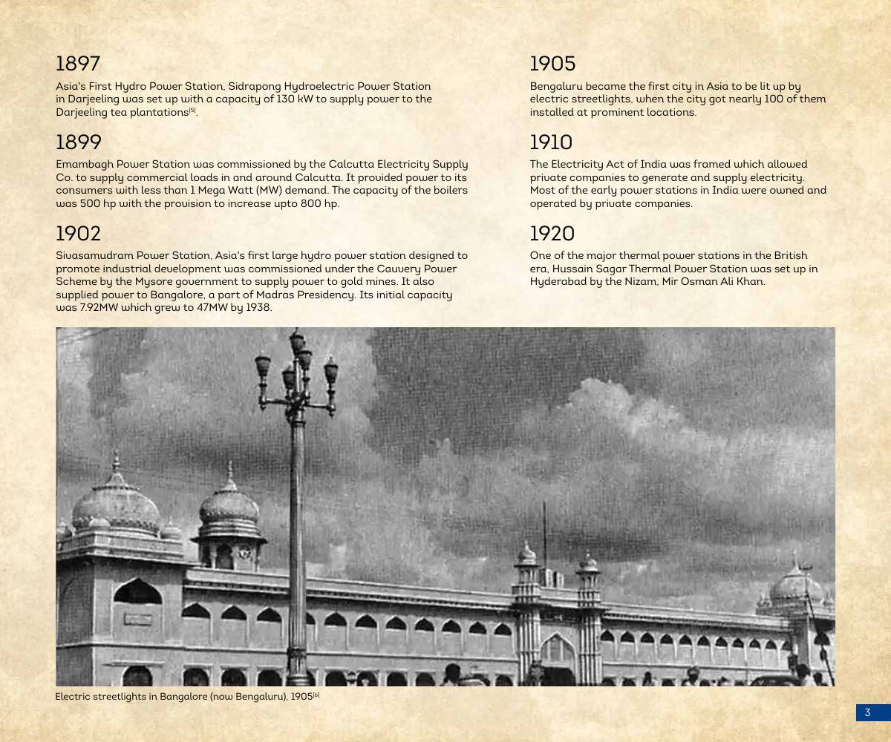
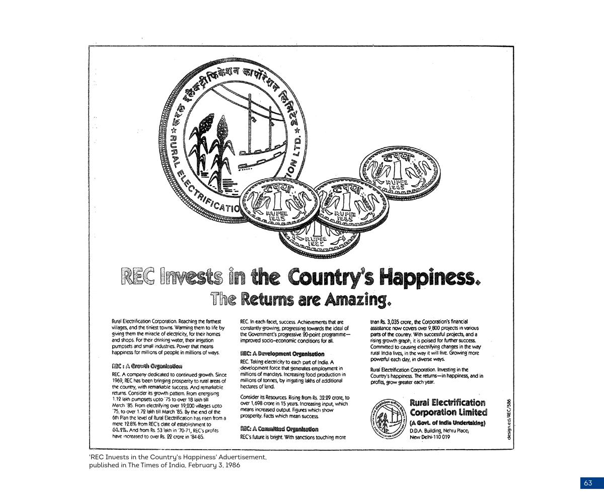
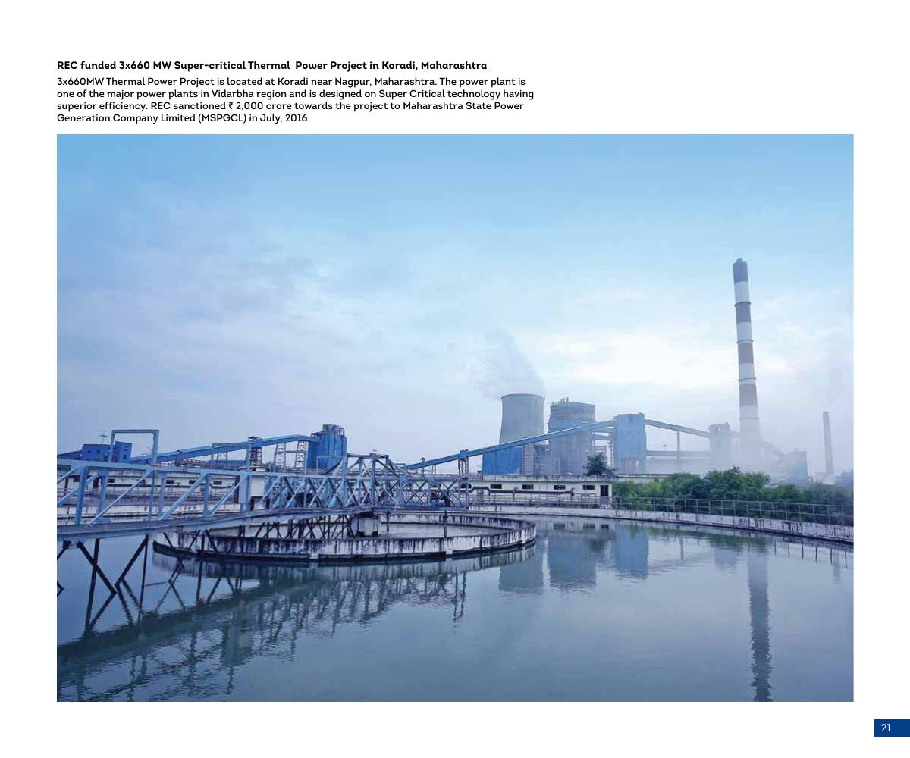

Case studies REC 50th anniversary book
Telling 50 years of REC and India's power sector in one book
For REC's 50th anniversary, I researched, wrote and produced A Journey Towards Infinity, an 88-page book telling five decades of the company and India's power sector through Panchatattva, the five elements.

01Challenge
REC's history was fragmented, held in old annual reports, physical office records and the memories of former employees. The 50th anniversary called for one coherent account of the company and of the power sector it grew up with.
02My role
I researched and wrote the book, and took it through design, production and printing.
03Strategy
I set REC's story alongside the wider history of India's power sector, so readers could follow the two together. Panchatattva, the five elements, gave five decades of material a clear structure. Primary sources came first, from company records to the people who lived that history.
04Execution
- Archival researchGathered old annual reports from physical office records and the library.
- InterviewsReached out to retired REC employees and interviewed them.
- PhotographyContacted clients for high-quality pictures of their energy-sector projects.
- TimelineCreated a timeline of the power sector and REC Limited through extensive research and synthesis.
- WritingSynthesized the research and wrote the book.
- Design and productionCoordinated with the design team on the book's design and production.
- PrintingCoordinated with the printer through to the finished book.






05Outcomes
- REC's fragmented institutional and power-sector history became one coherent narrative and a lasting corporate asset.
- The finished book is published on REC's coffee table books page.
I enjoy translating data and information into storytelling. This book let me do that at every stage, from reading old annual reports to seeing the printed pages.